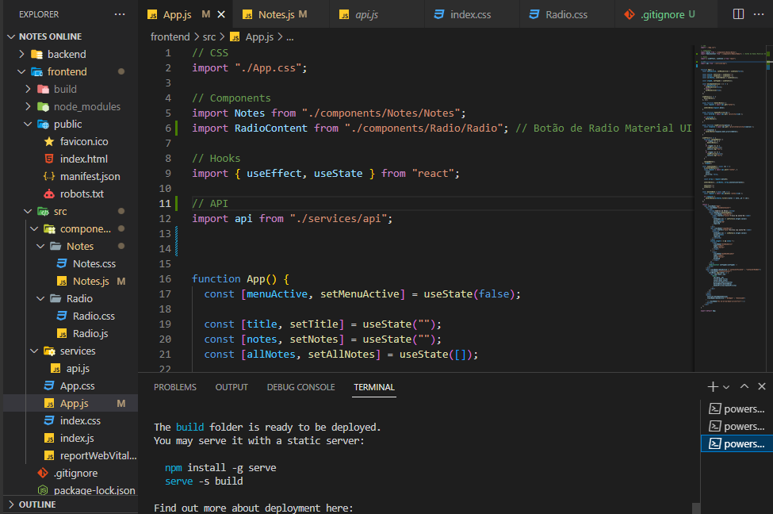
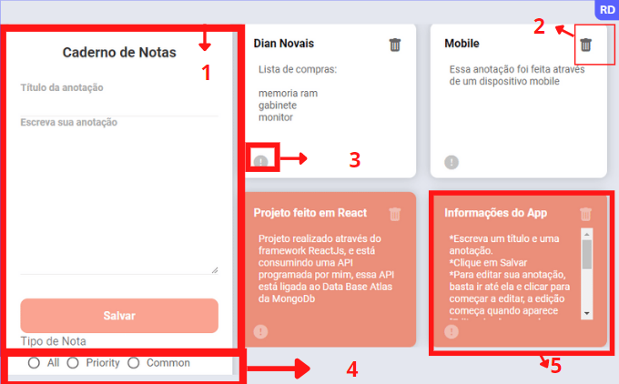

Notes Online
Nessa página venho trazer a vocês, esse novo projeto com suas informações, quais tecnologias foram usadas e como funciona o mesmo. Role a página para ver as informações, ou clique nas opções abaixo.
Tecnologias usadas
Neste projeto foi utilizado o ReactJs para o frontEnd com seus hooks de muita importância, com o ReactJs conectamos e consumimos uma API projetada e desenvolvida com o FrameWork Express onde utiliza o Node.js, essa API faz validações e se conecta com o Data Base da MongoDb. Com essas tecnologias foi possível a realização desse projeto.
Utilidades do App
Item 1: Como podem ver no item 1, é o caderno de anotações, onde você pode adicionar seu titulo, e sua nota, em seguida clique no botão salvar e pronto, sua nota está salva no servidor online!
Item 2: No Item 2 aparece uma lixeira, basta clicar para remover sua nota.
Item 3: É um ponto de exclamação onde você pode está alterando se sua nota é prioridade ou não.
Item 4: Esse é o filtro, as opções permitem separar as notas com prioridade das quais não são prioridade.
Item 5: No item 5 também importante, você pode alterar sua nota apenas clicando em cima e começando a editar, assim que começar a escrever aparecerá um texto "editando...", para salvar basta clicar fora da nota.
Veja o video abaixo